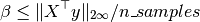

Note
Click here to download the full example code
Hyperparameters of Dirty models¶
The aim of this example is to show how Dirty models change with the choice of their tuning hyperparameters.
DirtyModel estimates a set of sparse coefficients for multiple regression models that share a fraction of non-zero features. It is a generalization of The GroupLasso estimator. It also takes a 3D X (n_tasks, n_samples, n_features) and a 2D y (n_tasks, n_samples).
DirtyModel solves the optimization problem:
(1 / (2 * n_samples)) * ||Y - X(W_1 + W_2)||^2_Fro + alpha * ||W_1||_21
+ beta * ||W_2||_1
Where:
||W||_21 = \sum_i \sqrt{\sum_j w_ij^2}
i.e. the sum of norm of each row. and:
||W||_1 = \sum_i \sum_j |w_ij|
Some choices of alpha and beta eventually cancel out W_1 or W_2 entirely. The optimality condition of the optimization problem above leads to:
and:

Then we have the sufficient conditions:
(1) leads to a Group Lasso estimator, (2) leads to an independent Lasso with the same beta for all tasks.
# Author: Hicham Janati (hicham.janati@inria.fr)
#
# License: BSD (3-clause)
import numpy as np
from mutar import DirtyModel
from matplotlib import pyplot as plt
from matplotlib.patches import Patch
from matplotlib.lines import Line2D
Generate multi-task data
rng = np.random.RandomState(42)
n_tasks, n_samples, n_features = 5, 20, 50
X = rng.randn(n_tasks, n_samples, n_features)
# generate random coefficients and make it sparse
# select support
support = rng.rand(n_features, n_tasks) > 0.95
coef = support * rng.randn(n_features, n_tasks)
# make features 0, 2, 4 and 6 shared
coef[:7:2] = rng.randn(4, n_tasks)
y = np.array([x.dot(c) for x, c in zip(X, coef.T)])
# add noise
y += 0.25 * np.std(y) + rng.randn(n_tasks, n_samples)
We create a grid of hyperparameters
xty = np.array([xx.T.dot(yy) for xx, yy in zip(X, y)])
beta_max = abs(xty).max() / n_samples
alpha_max = np.linalg.norm(xty, axis=0).max() / n_samples
alphas = np.linspace(0.02, 1.1, 40) * alpha_max
betas = np.linspace(0.02, 1.1, 40) * beta_max
alphas_mesh, betas_mesh = np.meshgrid(alphas, alphas)
alphas_mesh = alphas_mesh.flatten()
betas_mesh = betas_mesh.flatten()
For each (alpha, beta) we check if W_1 = 0 or W_2 = 0
type_of_model = []
for alpha, beta in zip(alphas_mesh, betas_mesh):
dirty = DirtyModel(alpha=alpha, beta=beta)
dirty.fit(X, y)
W1 = abs(dirty.coef_shared_).max()
W2 = abs(dirty.coef_specific_).max()
if W1 and not W2:
type_of_model.append(0)
elif W2 and not W1:
type_of_model.append(1)
elif W1 and W2:
type_of_model.append(2)
else:
type_of_model.append(3)
type_of_model = np.array(type_of_model)
Plot nature of model depending on hyperparameters To benefit from the partial overlap offered by Dirty models, we should pick alpha, beta in the gold area
# We create the legend manually
patch_colors = ["indianred", "cornflowerblue", "gold", "black"]
patch_names = ["Group Lasso", "Ind Lasso", "Dirty (strict)", "All Zeros"]
line_colors = ["limegreen", "cyan", "black", "orange"]
line_names = [r"$\beta = \alpha$",
r"$\beta = \frac{\alpha}{\sqrt{n\_tasks}}$",
r"$\beta = \beta_{max}$",
r"$\alpha = \alpha_{max}$"]
patches = [Patch(color=c, label=name)
for c, name in zip(patch_colors, patch_names)]
lines = [Line2D([0], [0], color=c, lw=3, ls="--", label=name)
for c, name in zip(line_colors, line_names)]
legend_handles = patches + lines
# We plot the type of each model
colors = np.array(patch_colors)[type_of_model]
f, ax = plt.subplots(1, 1, figsize=(8, 6))
ax.scatter(alphas_mesh / alpha_max, betas_mesh / beta_max, color=colors,
alpha=0.5)
ax.plot(alphas / alpha_max, alphas / beta_max, color=line_colors[0], lw=4,
ls="--")
ax.plot(alphas / alpha_max, alphas / ((n_tasks ** 0.5) * beta_max),
color=line_colors[1], lw=4, ls="--")
ax.hlines(1., xmin=0.02, xmax=1.0, color="black")
ax.vlines(1., ymin=0.02, ymax=1.0, color="orange")
ax.set_xlabel(r"$\alpha / \alpha_{max}$")
ax.set_ylabel(r"$\beta / \beta_{max}$")
ax.legend(handles=legend_handles, loc=2, ncol=4, bbox_to_anchor=[0.05, 1.18],
labelspacing=2., fontsize=10, frameon=False)
plt.show()
Total running time of the script: ( 0 minutes 8.916 seconds)
Estimated memory usage: 10 MB